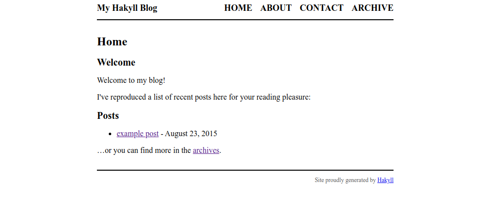

Setting up this blog using Hakyll
To kick things off, I will write about the birth of this blog. I decided to use Hakyll, which is a static site generator written in Haskell. It uses its own domain-specific language (DSL) for configuration, hosted within Haskell.
FYI: I wrote this in a Google docs and then transferred it to a real blog post once the site was set up.
Installation
The setup process started off rather rocky - following the Hakyll tutorial, I ran stack install hakyll and immediately encountered the following error.
Error: While constructing the build plan, the following exceptions were
encountered:
In the dependencies for hakyll-4.13.4.1:
pandoc-2.7.3 from stack configuration does not match >=2.10 && <2.11 (latest
matching version is 2.10.1)
needed since hakyll is a build target.
Some different approaches to resolving this:
* Set 'allow-newer: true'
in /home/alyta/.stack/config.yaml to ignore all version constraints and
build anyway.
* Recommended action: try adding the following to your extra-deps
in /home/alyta/.stack/global-project/stack.yaml:
- pandoc-2.10.1@sha256:23d7ec480c7cb86740475a419d6ca4819987b6dd23bbae9b50bc3d42a
7ed2f9f,36933
Plan construction failed.Hakyll seems to be using a much older version of Pandoc than what is available. I tried following the recommended action of adding pandoc-2.10 to my global dependencies, but this seems to lead down a rabbit hole where pandoc-2.10 requires unmatched dependencies which themselves have unmatched dependencies, etc. I also tried setting allow-newer: true, in the hopes that Hakyll will be able to build with a newer version of Pandoc anyway, but alas that was not the case…
After a Google search for similar problems, the solution seems to be using a different package resolver. Indeed, the stackage page for Hakyll mentions the lts-16.26 resolver (at the time of writing) whereas my resolver on stack is lts-14.17. Therefore to “resolve” the issue, I just had to specify the resolver via stack install hakyll --resolver lts-16.26. Now Hakyll installs successfully!
Initializing the site
The next step is to start a github pages repo and initialize a template Hakyll site in it. To start a github pages repo, all I had to do was create a repo with the name alyata.github.io. Then any html files on the repo’s master branch can be accessed by opening alyata.github.io/path/to/file.html on the browser, though it takes a couple minutes to refresh pushed content sometimes. If there is a index.html file on the root of the repo, then this can be accessed just by opening the site alyata.github.io.
I then cloned the repo and initialized a stack project inside the folder using the existing Hakyll project template: stack new --bare alyata-blog hakyll-template --resolver lts-16.26. Here’s a dissection of the command:
new- create a new project.--bare- create the project in the current directory. Default, non-bare behavior is to create a new directory.alyata-blog- name of the project. This would be the name of the new directory if –bare was not used.hakyll-template- use the Hakyll project template that initializes a bare bones blog site.--resolver lts-16.26- use the same package resolver I installed Hakyll with.
This generated a haskell source file along with some directories and configuration files which I committed to a new develop branch. Finally, I compiled the project using stack build. The compiled program is the site generator, which generates the html/css files for the actual site. I can run the generator by running stack exec alyata-blog build, which will then generate the entire site in the _site folder. This is slightly confusing as both are build commands - just keep in mind that the latter builds the site, and the former builds the builder… (Who watches the watchmen?)
To keep things separate, the code for the generator goes to the develop branch, while the result of running the compiled generator goes to the master branch to be displayed. To do this, I ran the generator, switched back to master branch and copied everything in the output folder _site to the root of the branch. After committing and pushing the freshly copied files, I was able to see the template site online:

I will have to do this every time I want to deploy a change in the develop branch, which sounds rather tedious. Therefore, my next step was to configure a deploy command for doing all of these steps automatically.
Configuring deployment
The deployment script is as follows, which is largely adapted from the github pages tutorial on the hakyll site. Hopefully the script itself is self-explanatory.
#!/bin/bash
# deploys the site to the master branch
# store uncommited changes
git stash
# make sure we are in develop branch
git checkout develop
# build the latest changes
stack build
stack exec alyata-blog rebuild
# make sure local repo is up to date
git fetch --all
# go to master branch - create one if it doesn't exist, otherwise reset the
# existing master branch
git checkout -B master --track origin/master
# override the existing files in master with the fresh output
rsync -a --filter='P _site/' \
--filter='P _cache/' \
--filter='P .git/' \
--filter='P .gitignore' \
--filter='P .stack-work' \
--delete-excluded \
_site/ .
# commit
git add -A
git commit -m "Publish"
# push
git push --set-upstream origin master
# restore state of repo
git checkout develop
git branch -D master
git stash popFinishing touches
To make the blog not look like it came from the early 2000s, I imported the Bootstrap css which at least makes the fonts nicer, as you see it right now. This is a simple (but really long) one-liner:
<link href="https://cdn.jsdelivr.net/npm/bootstrap@5.0.0-beta1/dist/css/bootstrap.min.css" rel="stylesheet" integrity="sha384-giJF6kkoqNQ00vy+HMDP7azOuL0xtbfIcaT9wjKHr8RbDVddVHyTfAAsrekwKmP1" crossorigin="anonymous">A more up-to-date version of this import can be found on the Bootstrap quickstart page.
I also added syntax highlighting by copying the Pandoc syntax highlighting css file from the official hakyll repository. Finally, for the cherry on top I added the following css styles which add borders around code blocks:
/* box around inline code */
code {
background-color: rgb(250, 250, 250);
border: 1px solid rgb(200, 200, 200);
padding-left: 4px;
padding-right: 4px;
font-size: 14px;
}
/* box around code blocks */
pre code {
display: block;
padding: 8px;
margin-bottom: 2em;
}And that’s it! It’s still very close to the original template, but this is fine for now because I like the default layout anyway and CSS is a headache.